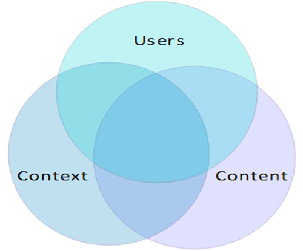

Stay Connected 

U.S. Department of Health & Human Services - 200 Independence Avenue, S.W. - Washington, D.C. 20201
Information architecture (IA) focuses on organizing, structuring, and labeling content in an effective and sustainable way. The goal is to help users find information and complete tasks. To do this, you need to understand how the pieces fit together to create the larger picture, how items relate to each other within the system.
According to Peter Morville  , the purpose of your IA is to help users understand where they are, what they’ve found, what’s around, and what to expect. As a result, your IA informs the content strategy through identifying word choice as well as informing user interface design and interaction design through playing a role in the wireframing and prototyping processes.
, the purpose of your IA is to help users understand where they are, what they’ve found, what’s around, and what to expect. As a result, your IA informs the content strategy through identifying word choice as well as informing user interface design and interaction design through playing a role in the wireframing and prototyping processes.
To be successful, you need a diverse understanding of industry standards for creating, storing, accessing and presenting information. Lou Rosenfeld and Peter Morville in their book, Information Architecture for the World Wide Web, note that the main components of IA:
In order to create these systems of information, you need to understand the interdependent nature of users, content, and context. Rosenfeld and Morville referred to this as the “information ecology” and visualized it as a venn diagram. Each circle refers to:
Since the field of IA is complex and when dealing with large information systems the task becomes more massive, sometimes experts choose a specialized niche within the discipline. Some examples of IA sub-specialties include focusing on search schemas, metadata, taxonomy, etc.
, Web Style Guide 3rd Edition.